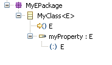
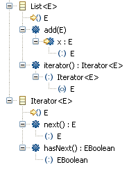
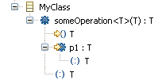
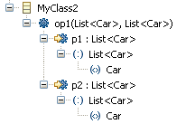
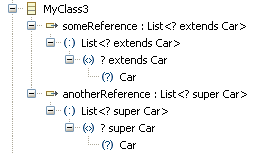
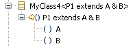

Glossary
A few terms and abbreviations will be used throughout this document.UML Specification
UML2 2.1. This refers to the latest version of the UML API which is based on the UML 2.1.1 specification defined by OMG. The latest draft of the UML Superstructure Specification can be found at: http://www.omg.org/docs/formal/07-02-05.pdf
Introduction
There are two main benefits in familiarizing yourself with UML templates: firstly, you can express and communicate your ideas more accurately, and secondly, code generated via conversion through Ecore will result in generically specified Java. Through a series of examples, this article attempts to explain how templates in UML map to generics in Ecore and Java.
Some concepts involving generics in UML do not map directly to Java (or Ecore). In general, UML is more verbose and requires a modeler to create more constructs to convey ideas that would otherwise be more simply described in Java (or Ecore).
Consider template bindings for example: template bindings are constructs that do not explicitly exist in Java (or Ecore). The template binding concept in UML can be considered to be a "merging" of templateable items into the bound item where actual parameters are substituted for formal parameters. More about this in the section entitled "Some UML Basics".
Concrete classifiers that result from applying template bindings to a templated classifier can also be considered an "artificial" construct required by UML. Such additional classifiers are not needed when describing generics in Java (or Ecore). The examples listed later in this document will explain these ideas in detail.
Enhanced Ecore Profile
The mapping from UML to Ecore as implemented in the UML2 2.1 API is intended to be a lossless conversion. Round tripping from UML to Ecore and back again should produce the original UML model. To achieve this lossless conversion, concepts present in Ecore, but not in UML have been added to an enhanced Ecore profile. The information added to stereotyped items will be reapplied when converting back.
What UML does not capture that Ecore does:
- Multiple bounds on ETypeParameters. The <<eTypeParameter>> stereotype has been created for this purpose.
- Upper and lower bounds on EGenericTypes. (It should be pointed out that it is possible to specify a single bound on type parameters in UML via the ClassifierTemplateParameter::constrainingClassifier property but this is currently a scalar value). The <<EGenericType>> stereotype has been created for this purpose.
- UML requires "additional" classifiers to specify bound generic types. These need to be marked in order to remove them when converting from UML to Ecore. The <<eGenericType>> stereotype is used as a marker so that conversion from UML to Ecore will result in dropping elements with such stereotypes.
The subset of newly added stereotypes to the Ecore profile is shown in the following diagram:
While we are on the topic of differences between Ecore and UML we should mention that UML has some 'quirkiness' in the area of templates. In the current version of the UML specification, UML has multiple actual parameters per formal parameter. It is unclear how multiple parameters could be substituted for one formal parameter. The conversion process therefore considers only one actual per formal parameter. An issue for this has been raised at OMG and should be resolved by the next revision of the UML specification.
Some UML Basics
UML allows users to model generics via templates and template bindings. Section 17.5 of the UML superstructure specification describes all the constructs required to describe templates.
Quoting from the UML superstructure specification...
A TemplateableElement that has a template signature is a specification of a template. A template is a parameterized element that can be used to generate other model elements using TemplateBinding relationships. TemplateableElements can have template signatures and template bindings. Thus a templateable element may be both a template and a bound element. The template parameters for the template signature specify the formal parameters that will be substituted by actual parameters in a binding.
A template cannot be used in the same manner as a non-template element of the same kind. The template element can only be used to generate bound elements or as part of the specification of another template. A bound element is an ordinary element and can be used in the same manner as a non-bound element of the same kind. This is an important point since it means that a template class cannot be used as the type of a typed element.
ParameterableElement is an element that can be exposed as a formal template parameter for a template or specified as an actual parameter in a binding of a template. A ParameterableElement may be part of the definition of a template parameter. In an element bound to the template, any use of the template parameter will be substituted by the use of the actual parameter. If a ParameterableElement is exposed as a template parameter, then parameterable element is only meaningful within the template.
A TemplateBinding represents a relationship between a templateable element and a template. A template binding specifies the substitutions of actual parameters for the formal parameters of the template. The presence of a template binding relationship implies the same semantics as if the contents of the template owning the target template signature were copied into the bound element, substituting and elements exposed as formal template parameters by the corresponding elements specified as actual parameters in the binding.
The kinds of UML metatypes that can be templateable are Classifier (Class, Component etc.), Operation, Package and less commonly, Property, and StringExpression.
Neither Ecore nor Java has this template binding concept so having a firm grasp of the UML metamodel is important if you are only familiar with generics in Java.
The Ecore Meta-Model
The following diagram showing a subset of the Ecore metamodel (highlighting generics) will be used as a reference when describing the UML to Ecore mapping.
Figure 1: Ecore meta-model
With this metamodel in mind, we can mention several interesting points:
- ETypeParameters correspond roughly to TemplateParameter in UML.
- EGenericType has no direct mapping to UML
- EGenericType can be specified by setting its eClassifier or eTypeParameter property.
- EOperation and EClassifier can be parameterized with ETypeParameter. Similarly, Operation and Classifier in UML can have a template signature with parameters.
- EClass can have eGenericSuperTypes. That is, supertypes of some EClass can be represented by some EGenericType.
- ETypedElement can have some EGenericType as a type.
- ETypeParameter can have bounds which are of type EGenericType.
If you wish to follow along with the examples and experiment on your own, you should first enable the showing of generics for your Ecore model.
Showing of generics is enabled from the "Sample Ecore Editor" menu when the Ecore editor is being used: From the toolbar, select "Sample Ecore Editor > Show Generics".
Further details on working with generics in EMF can be found at http://wiki.eclipse.org/EMF_2.3_Generics.
Case Studies
![[Note]](../images/tip.gif) |
If you are familiar with generics in Java and you just want to discover how to create the equivalent UML representation, I would recommend starting with the Ecore representation of your generically specified model. Then, convert your Ecore model to UML. The resulting UML model will have expanded all bindings, and any required stereotypes will be applied. The reason for starting with Ecore is that it is much easier to specify generics using Ecore and requires fewer constructs.
|
Baby Steps: Simple Type Parameter
Consider a simple case where we define a generic class with one property of some generic type.
Visually
Java
Ecore
The Ecore representation would look like the following:
|  |
|
UML
As you can see, the UML representation is more verbose than the Ecore representation.
- The UML representation creates a template by constructing a template signature owned by MyClass.
- The signature in this case has one template parameter E.
- The template parameter directly owns another class E and uses that class as its parametered element.
The class E is the parametered element that will be the focus of bindings when we replace formal parameters with actual parameters. We can say that the template parameter 'exposes' the parametered element (E in this case) as a formal parameter.
You may have also noticed the <<eTypeParameter>> stereotype. The <<eTypeParameter>> stereotype contributes the concept of "bounds" to UML template parameters. In Ecore, generic bound types allow one to place constraints on the types of allowable substitutions. For example, one could express that substitutions for the template parameter must extend some particular classifier such as MyClass<? extends MyOtherClass>. This will be explored more in the following examples.
Baby Steps: Creating a Generic Type
In a little more realistic example, we might have something like the following.
Visually
Java
Ecore
|  |
|
UML
The main elements in the UML representation are: a class called List, a class called Iterator and a newly introduced class called Iterator_E, see below.
You might be scratching your head about Iterator_E. This construct is required because the class List has an operation that returns an iterator that is bound to the same element passed as an argument to "List" itself. UML does not allow us to use templates as the type of an element, therefore we need to create a new bound class: Iterator_E.
The template parameter substitution for Iterator_E above has the following binding:
The formal template parameter for Iterator<E> is bound to the actual parameter E of List.
Basics: Binding to a Generic Class
Let's put together some of the basic ideas we have already explored. In this example, ArrayList<E> is a generic array list whose super type is the generic List<E>. In UML we require the creation of the concrete type List_E with its bindings set up. In addition, TestClass has a property which is an ArrayList of Cars. Again, we create a new class ArrayList with bindings set up to the class Car.
Visually
Java
The TestClass class:
The ArrayList class:
Ecore
UML
ArrayList is the specialization of the concrete List_E class where the formal template parameter E of List is substituted for the actual parameterable element E of ArrayList. These are the substitutions for the binding of List_E:
The class ArrayList_Car substitutes the actual parameter Car for the exposed template parameter of E of ArrayList. These are the substitutions for the ArrayList:
Basics: Operation with Template Parameter
In UML, operations are templateable elements. In this next example we will have a look at adding template parameters to an operation. The operation will have a template parameter T, and will return elements of type T. The operation will also have a parameter p1 of type T.
Visually
Java
Ecore
|  |
|
UML
Basics: Bound Operation Parameters
In this example we show an operation with two parameters that are lists of cars. As you might have guessed, the UML version will require an extra bound class.
Visually
Java
Ecore
|

|
|
UML
The only important thing to point out here is that the bound List_Car is not duplicated in the UML representation. The bound List_Car is used in the context of MyClass2.
Advanced: Wildcards
(Specifying upper and lower bounds on parameters)
It is possible to specify wildcards when using parameters in Ecore and Java. Wildcards are represented by "?". The "?" stands for an unknown type. It is possible to specify upper and lower bounds on such wildcards. When we talk about bounds, we refer to the ability to specify that bindings to a generic type parameter must either be the super type of some classifier or extend some classifier. In this way, tighter restrictions can be placed on acceptable bindings. In addition to tightening restrictions, upper bounds (extends) are particularly useful for ensuring that substitutions will have features that are required by the template for its behavior. For example, one might have List<E extends Comparable> because the list actually needs to be able to compare E's using the Comparable::compareTo(...) operation
Visually
Java
Ecore
|

|
|
UML
If we focus on the "someReference" property, we see that we need to create a new class called "Wildcard_extends_Car". This particular class has its stereotype property for the upper bound set to Car:
Next, we see that another new class is created in order to bind the formal parameter of the generic List to classes of Wildcard_extends_Car:
Advanced: Type Parameters That Extend Multiple Classifiers
Type parameters in Ecore can also have bounds and in such cases it is possible to specify multiple upper bounds.
Visually
The interesting part is the bounds information stored in the stereotype (see below).
Java
Ecore
|

|
|
UML
For the template parameter P1 we have to specify the bounds using the stereotype since multiple bounds on such parameters are not possible using UML:
Conclusion
Congratulations! You've made it this far, if you've followed through the examples, you will no doubt have discovered that the UML representation is verbose and intricate in comparison to Ecore or Java. Hopefully, with a bit of practice, the UML representation will become second nature. This article really only scratches the surface of the intricate possible scenarios one may create when working with generics. By using templates in UML you can express and communicate your ideas more accurately, and code generated via conversion through Ecore will result in generically specified Java.
For more information on UML2, visit the home page or join the newsgroup.
Acknowledgements
Thanks to Kenn Hussey, Ed Merks and Christian Damus for their thorough and careful reviews.
References
[1] Unified Modeling Language: Superstructure, version 2.1.1; formal/2007-02-05. OMG.
[2] RTF Issue 9398